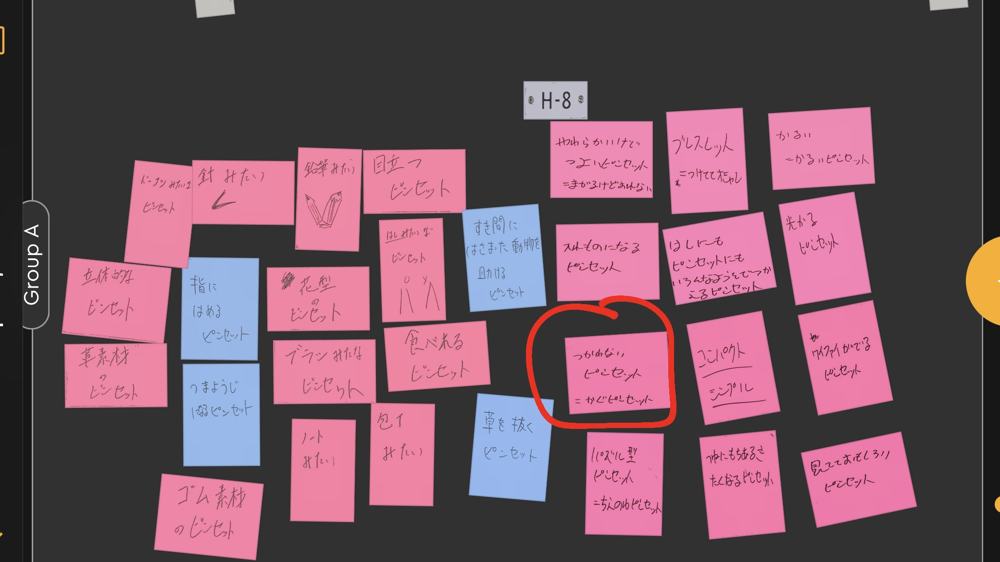
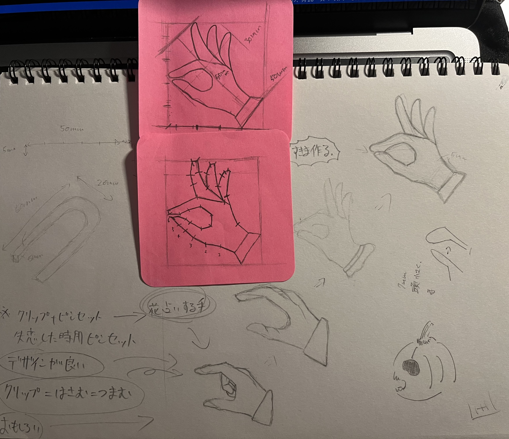
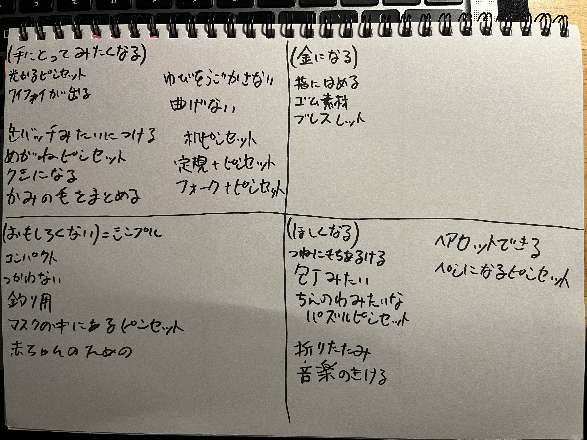
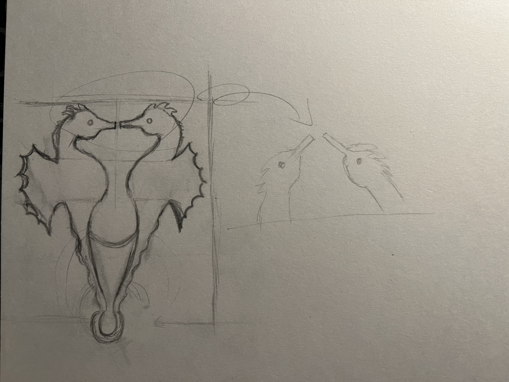

【ピンセットを進化させよう】
置物ピンセット
今回私が作ったものは置き物ピンセット‼︎
今回はデジタルファブリケーションの課題で
3Dプリントを用いてピンセットを進化させるといった内容です。
[目次]
アイディア出し
アイディアを形に
Fusion360から３Dプリントへ
完成品の紹介
まとめ・感想等
暇を持て余していたので色々作ってみたシリーズ
①アイディア出し
第一回目の授業でグループの人達とピンセットをお題にしたアイディア出しの時間がありました。
その時に出たお題の一部から今回の作品では置物ピンセットを作ることに決めました。
最初はこの様なアイディアが出ました。
その中で今回はこの丸で囲っているアイディアが最終的に決まったものになりました。
今回この家具ピンセット＝置物ピンセットになる前に手の形をしたピンセットを作りました。
この上のが置き物ピンセットの前に考えた手形ピンセットです。
これは作った際に指が動かなかったので失敗作になりました。

手形ピンセットが失敗作になり指を長くしてまで動く物を作りたいとは思いませんでした。
そこで新しくアイディアを出そうとアイディア出しの時間に付箋で書いたアイディアを４つに分類して、その中で
おもしろくない枠にある使わないピンセット 後に置き物ピンセットとなるアイディアを選びました。
これを選んだ理由としては、俺なら面白くないものを面白くできるし！という勢いからこのアイディアに決めました。
②アイディアを形に
今回私が作ることに決めた作品は、失敗作の第二弾を作ってもデザインが変わってつまらないと思った勢いから生まれた物なので
頭に浮かんだアイディアはこれくらいしかスケッチせずにほぼ勢いだけでFusion360に入っていきました〜。
下のものが、その時軽くスケッチしたものになります。
勢いから生まれたデザインのアイディアはタツノオトシゴでした。
この作品をFusion360でデザインを決め、この様に立体的になりなした。

③Fusion360から３Dプリントへ
とうとう３Dプリントしていく過程まできました！
それでは３Dプリントしている過程をご覧ください。


④完成品の紹介
見事何の障害もなく完成というゴールを迎える事ができました。ﾊﾟﾁﾊﾟﾁ
それではご覧ください今回私が作り上げた置き物ピンセットです！

とうとう完成しました！実際に物を挟んでみます

この様にちゃんと物を挟む事ができました。成功です！
完成はしました。ですがこれだとデザインは可愛い置き物ピンセットに過ぎません
なので暇を持て余していたのでここから色々作ってみました。


この二つを最終的に合体させます。そうすると...

どうでしょうか‼︎‼︎この可愛くさらにちゃんと置き物として置いとけるピンセットは！
ピンセットだけでも可愛いので置き物ピンセットの役割はちゃんと果たせているので成功です。
今回暇だったのでさらにいいを求めて色々と作って遊んでみました。
⑤まとめ・感想等
今回は最初失敗することもありましたが、自分の作りたい物を３Dプリンターを使って作る事ができました。
そして目標である置き物ピンセットを見事達成する事ができたと思います。
何より自分で作りたいと思った物を楽しみながら作れた事はいい学びになれたと感じました。
少々長くはなりましたが、ご覧下さりありがとうございました。
stlファイル⑥暇を持て余していたので色々作ってみたシリーズ
 失敗作
失敗作
 Heart
Heart
 土台
土台 掴みやすいタツノオトシゴピンセット
掴みやすいタツノオトシゴピンセット
 このデザインでピアス作ってと頼まれたので試作品
このデザインでピアス作ってと頼まれたので試作品 神殿の柱
神殿の柱
 神殿の柱三倍バージョン
神殿の柱三倍バージョン最初のページへ